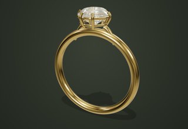

Латунь / галерея личных вещей
Форма.
Форма.
Материал.
Свет.

Солитер
Кольцо · открытая закрепка · свет со всех сторон
В галерее важен взгляд. В мастерской — ваш выбор. Измените металл, оттенок камня и детали изделия, сохранив его характер.
Выбранная композиция откроется в 3D. Меняйте детали, вращайте модель и сохраняйте вариант.